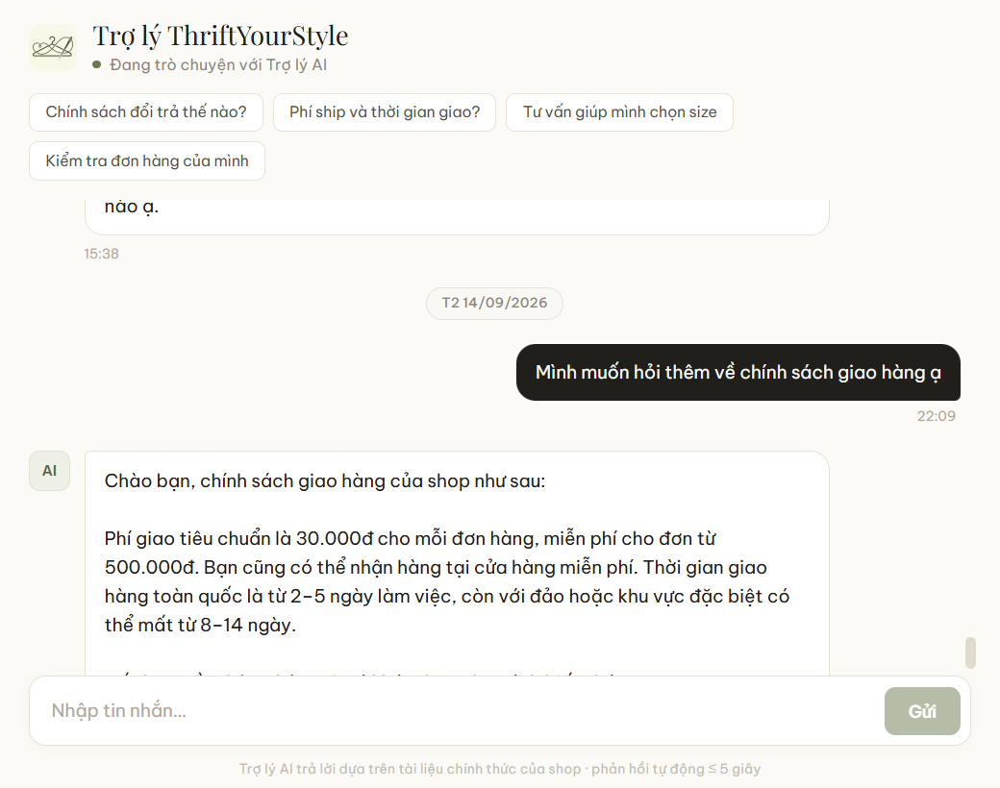
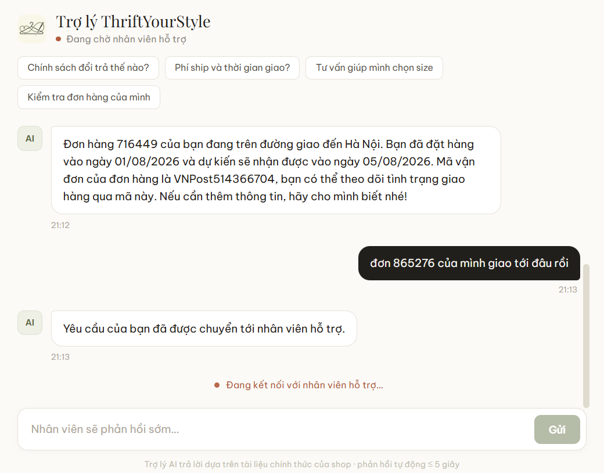
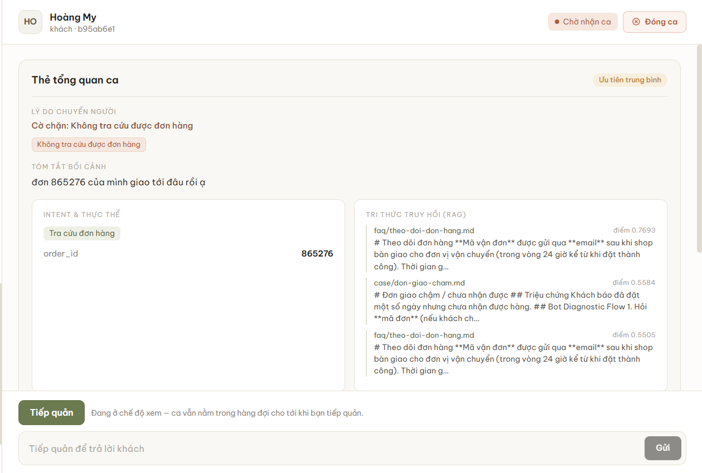

BAN CƠ YẾU CHÍNH PHỦHỌC VIỆN KỸ THUẬT MẬT MÃKHOA CÔNG NGHỆ THÔNG TIN
ĐỒ ÁN TỐT NGHIỆP
Xây dựng hệ thống chăm sóc khách hàng
tự trị sử dụng Multi-Agent AI
- Sinh viên thực hiện:
- Bùi Anh Tuấn – CT060144
- Giảng viên hướng dẫn:
- ThS. Vũ Thị Hòa
ThS. Cao Thanh Vinh
Hà Nội, 2026
Học viện Kỹ thuật Mật mãKhoa Công nghệ thông tin
Mạch trình bày
- I
Vấn đề cần giải quyếtKhách cần phản hồi nhanh, nhưng mọi câu trả lời vẫn phải đúng chính sách
- II
Lý do chọn đề tàiKhoảng trống giữa khả năng hiểu ngôn ngữ và khả năng kiểm soát cách xử lý
- III
Giải pháp đề xuấtQuy trình Multi-Agent cố định và các điều kiện bắt buộc trước khi trả lời
- IV
Hạn chế và hướng phát triểnNhững điểm chưa đạt và cách cải thiện trước khi mở rộng hệ thống
- V
Kết luậnKết quả, đóng góp chính và phần demo ba tình huống trên hệ thống
Học viện Kỹ thuật Mật mãKhoa Công nghệ thông tin
- Vấn đề
- Lý do chọn đề tài
- Giải pháp
- Hướng phát triển
- Kết luận
Phản hồi khách hàng phải nhanh mà vẫn đúng chính sách
Vì sao cách làm thủ công không còn phù hợp?
-
Tốn nguồn lực cho câu hỏi lặp lại
Phí vận chuyển, kích cỡ, trạng thái đơn và đổi trả đều đã có câu trả lời, nhưng nhân viên vẫn phải tra cứu và trả lời lại.
-
Khách phải chờ ngoài giờ
Tin nhắn thường tăng mạnh vào buổi tối và cuối tuần, khi nhân viên không trực.
-
Câu trả lời thiếu nhất quán
Cùng một chính sách có thể được diễn đạt khác nhau, gây khó kiểm tra khi có khiếu nại.
AI trả lời trực tiếp chưa đủ an toàn
Mô hình có thể diễn đạt trôi chảy nhưng vẫn tạo ra chính sách, mã giảm giá hoặc cam kết không tồn tại.
Trong chăm sóc khách hàng, trả lời sai có thể gây mất tiền và mất niềm tin; chuyển đúng trường hợp cho nhân viên an toàn hơn.
Học viện Kỹ thuật Mật mãKhoa Công nghệ thông tin
- Vấn đề
- Lý do chọn đề tài
- Giải pháp
- Hướng phát triển
- Kết luận
Giải pháp hiện có: hiểu tốt thì khó kiểm soát
Giải pháp truyền thống
Chatbot kịch bản, chatbot nhận diện ý định (NLU)
- Dễ dự đoán, kiểm soát được luồng xử lý
- Khó hiểu cách diễn đạt tự do của khách
AI tự xử lý trực tiếp
AI trả lời trực tiếp bằng mô hình ngôn ngữ lớn (LLM), hoặc nhiều tác tử tự điều phối
- Hiểu tốt hơn các câu hỏi diễn đạt tự do
- Khó dự đoán quá trình xử lý và khó truy vết khi xảy ra lỗi
Khoảng trống cần giải quyết: hệ thống phải vừa hiểu được cách khách diễn đạt tự nhiên, vừa giữ quy trình và các quyết định rủi ro trong tầm kiểm soát.
Học viện Kỹ thuật Mật mãKhoa Công nghệ thông tin
- Vấn đề
- Lý do chọn đề tài
- Giải pháp
- Hướng phát triển
- Kết luận
Đề tài lấp khoảng trống: hiểu tốt nhưng vẫn kiểm soát được
Tách năng lực của AI khỏi quyền ra quyết định
- Multi-Agentđiểm mạnh của AI
Các tác tử AI chuyên trách phần việc mô hình làm tốt: hiểu yêu cầu, tìm căn cứ và diễn đạt phản hồi.
- Có kiểm soátđiểm mạnh của giải pháp truyền thống
Quy trình cố định quyết định thứ tự xử lý; luật nghiệp vụ và con người giữ quyền quyết định ở các trường hợp rủi ro.
“Tự trị” trong đề tài nghĩa là hệ thống tự hoàn tất yêu cầu thông thường; yêu cầu thiếu căn cứ hoặc nhạy cảm phải chuyển sang con người.
Mục tiêu của hệ thốngba yêu cầu cốt lõi
Tự xử lýTự hoàn tất các yêu cầu thông thường
Chuyển đúngĐưa trường hợp thiếu căn cứ hoặc có rủi ro cho nhân viên
Phản hồi nhanhDuy trì tốc độ phản hồi khi nhiều hội thoại diễn ra đồng thời
Học viện Kỹ thuật Mật mãKhoa Công nghệ thông tin
- Vấn đề
- Lý do chọn đề tài
- Giải pháp
- Hướng phát triển
- Kết luận
Mỗi tin nhắn đi qua một quy trình cố định gồm bốn bước
Tin nhắn của khách
-
1Hiểu yêu cầu
Intent
Xác định khách cần gì và trích xuất mã đơn hoặc thông tin quan trọng.
-
2Tìm căn cứ
Knowledge
Tìm chính sách liên quan và tra cứu dữ liệu của đúng khách hàng.
-
3Kiểm tra an toàn
Decision
Luật cố định quyết định trả lời, hỏi thêm, chờ duyệt hay chuyển nhân viên.
-
4Soạn phản hồi
Response
Chỉ soạn và gửi nội dung khi bước 3 xác nhận đủ điều kiện.
- Hỏi thêm mã đơn
Thiếu mã để tra cứu đơn
AWAITING_CUSTOMER - Trả lời khách ngay
Đủ căn cứ, ít rủi ro
REPLIED - Chờ nhân viên duyệt
Nhân viên duyệt hoặc sửa bản nháp
PENDING_APPROVAL - Chuyển cho nhân viên
Kèm lý do và tóm tắt hội thoại
IN_HUMAN_QUEUE
Mỗi bước do một tác tử chuyên trách thực hiện theo thứ tự cố định. AI được dùng để hiểu, tìm và diễn đạt; quyết định cho phép trả lời chỉ do luật cố định.
Học viện Kỹ thuật Mật mãKhoa Công nghệ thông tin
- Vấn đề
- Lý do chọn đề tài
- Giải pháp
- Hướng phát triển
- Kết luận
AI chỉ được trả lời khi hiểu yêu cầu và có đủ căn cứ
CÂU HỎI 1
Yêu cầu có rõ ràng và thuộc phạm vi xử lý không?
NẾU KHÔNG
Chuyển cho nhân viên
Yêu cầu không rõ, ngoài phạm vi cửa hàng hoặc khách muốn gặp nhân viên.
CÂU HỎI 2
Có thông tin đáng tin cậy để trả lời không?
NẾU KHÔNG
Chuyển cho nhân viên
Không tìm thấy chính sách, dữ liệu phù hợp hoặc dịch vụ tra cứu gặp lỗi: hệ thống không suy đoán.
CÂU HỎI 3
Nếu đã an toàn, có cần nhân viên duyệt không?
THEO CẤU HÌNH
Gửi ngayChờ nhân viên duyệt
Quy định theo từng loại yêu cầu; hoàn tiền, đổi hàng và khiếu nại mặc định phải chờ duyệt.
Nguyên tắc bắt buộc
Không có căn cứ thì không trả lời. Cấu hình chỉ chọn gửi ngay hay chờ duyệt cho trường hợp đã an toàn; không thể biến trường hợp rủi ro thành trường hợp được tự động trả lời.
Ví dụ: khách đề nghị cấp “mã giảm giá 70%”, tài liệu không có mã này → hệ thống không tự tạo mã.
Học viện Kỹ thuật Mật mãKhoa Công nghệ thông tin
- Vấn đề
- Lý do chọn đề tài
- Giải pháp
- Hướng phát triển
- Kết luận
Bốn hạn chế cần xử lý trước khi mở rộng hệ thống
HẠN CHẾ HIỆN TẠI
ẢNH HƯỞNG
HƯỚNG KHẮC PHỤC
1Độ trễ tăng khi nhiều hội thoại đến cùng lúc
Không đạt mục tiêu phản hồi trong 5 giây
Đặt các dịch vụ cùng khu vực; giảm những truy vấn cơ sở dữ liệu không cần thiết.
2Một số câu hỏi chưa tìm đúng nguồn
Chuyển sang nhân viên dù hệ thống có thể tự trả lời
Loại kết quả có độ phù hợp thấp, xếp hạng lại các kết quả sát nhau và viết lại câu hỏi nối tiếp theo ngữ cảnh.
3Cơ chế phối hợp mới an toàn trên một tiến trình
Khó tăng số máy chủ khi lượng khách tăng
Đưa trạng thái phối hợp sang kho dùng chung để nhiều tiến trình cùng hoạt động an toàn.
4Chưa tích hợp hệ thống đơn hàng thực tế
Mới dừng ở dữ liệu mô phỏng
Tích hợp hệ thống đơn hàng; thao tác nhạy cảm như hủy đơn, hoàn tiền vẫn do nhân viên duyệt.
Nguyên tắc không thay đổi: chỉ mở rộng tự động hóa khi vẫn kiểm soát được rủi ro.
Dài hạn: hệ thống đề xuất bổ sung tri thức để quản trị viên phê duyệt; sau đó mở rộng đa kênh và đa ngôn ngữ.
Học viện Kỹ thuật Mật mãKhoa Công nghệ thông tin
- Vấn đề
- Lý do chọn đề tài
- Giải pháp
- Hướng phát triển
- Kết luận
Kết luận: tự động hóa hiệu quả cần đi cùng kiểm soát
AI tự động hóa phần hiểu và trả lời;
luật và con người kiểm soát các quyết định rủi ro.
AI làm tốt phần ngôn ngữ
- Hiểu cách khách diễn đạt
- Tìm chính sách và dữ liệu liên quan
- Soạn câu trả lời theo căn cứ
Luật và con người giữ quyền kiểm soát
- Xác nhận có đủ căn cứ để trả lời
- Chặn hoặc chuyển các trường hợp rủi ro
- Phê duyệt các thao tác nhạy cảm
Kết quả đánh giá: đạt mục tiêu về tỷ lệ tự xử lý và tỷ lệ chuyển nhầm; độ trễ khi nhiều hội thoại đồng thời chưa đạt và cần tiếp tục tối ưu.
Em xin chân thành cảm ơn
các thầy cô đã lắng nghe
Em mong nhận được câu hỏi và góp ý của Hội đồng
Bùi Anh Tuấn – CT060144
Học viện Kỹ thuật Mật mãKhoa Công nghệ thông tin
Slide dự phòng
Slide dự phòng cho phần hỏi đáp
- DP1Vì sao không dùng SupervisorSo sánh điều phối động và quy trình cố định
- DP2Tám dấu hiệu rủi roCách bước 3 quyết định chuyển cho nhân viên
- DP3Ba dạng thông tin sai do AICơ chế chặn tương ứng với từng dạng
- DP4AI và nhân viên xử lý đồng thờiKiểm tra lại trạng thái trước khi ghi (CAS)
- DP5Bảo mật và giới hạn quyềnBốn lớp chống prompt injection, JWT, tra đơn theo tài khoản
- DP6Chọn ngưỡng 0,40Phép đo trên 32 + 25 câu hỏi
- DP7Độ trễ chi tiếtKết quả đo theo tải và phân rã từng bước
- DP8Kiến trúc tổng thểBốn lớp, dịch vụ bên ngoài, lưu trữ
- DP9Kho tri thức và RAGEmbedding, Qdrant, nạp lại blue/green
- DP10Ảnh chụp ba tình huống demoDùng khi không demo trực tiếp được
Học viện Kỹ thuật Mật mãKhoa Công nghệ thông tin
Slide dự phòngVì sao không dùng tác tử điều phối Supervisor?
Điều phối động có tác tử Supervisor
- Một mô hình AI tự chọn gọi tác tử nào, theo thứ tự nào, lặp bao nhiêu vòng
- Cùng một câu hỏi có thể đi nhiều đường; số lần gọi mô hình không có giới hạn
- Khó dự đoán chi phí, độ trễ; khó truy tìm nguyên nhân khi xử lý sai
Quy trình cố định đề tài lựa chọn
- Mọi lượt đi đúng một thứ tự bốn bước: dễ dự đoán, dễ kiểm tra lại
- Tối đa 2 lời gọi mô hình ngôn ngữ và 1 lời gọi embedding mỗi lượt
- Tác tử chỉ quyết nội dung (nhãn, cách tìm, cách diễn đạt), không quyết luồng xử lý
Đánh đổi chủ động: yêu cầu phức tạp cần phối hợp nhiều bước linh hoạt được chuyển cho nhân viên; ưu tiên trả lời ít hơn nhưng kiểm soát được.
Học viện Kỹ thuật Mật mãKhoa Công nghệ thông tin
Slide dự phòngTám dấu hiệu rủi ro và cách bước 3 ra quyết định
| Dấu hiệu rủi ro (cờ chặn) | Tên kỹ thuật |
|---|---|
| Phát hiện ở bước 1 – Hiểu câu hỏi | |
| Một tin nhắn hỏi nhiều việc khác nhau | multi_intent |
| Câu hỏi nằm ngoài phạm vi cửa hàng | out_of_domain |
| Khách yêu cầu gặp nhân viên | human_requested |
| Không gọi được mô hình AI để hiểu câu hỏi | llm_unavailable |
| Phát hiện ở bước 2 – Tìm căn cứ | |
| Không có tài liệu liên quan | no_relevant_knowledge |
| Tài liệu tìm được chưa đủ phù hợp (dưới ngưỡng 0,40) | low_retrieval_score |
| Dịch vụ tìm kiếm tri thức gặp lỗi | search_error |
| Không xác định được đơn (lỗi tra cứu, hoặc sai mã lần thứ hai) | order_unresolved |
Chỉ cần một dấu hiệu là chuyển cho nhân viên
Luật cố định, không gọi mô hình AI: quyết định không phụ thuộc cách AI diễn đạt hay mức tự tin AI tự khai.
Không cộng gộp hai thang đo
Độ tự tin khi hiểu câu hỏi và mức độ phù hợp của tài liệu khác bản chất, chỉ lưu để phân tích. Ngưỡng số duy nhất tham gia quyết định là mức phù hợp 0,40.
Thiếu mã đơn
Hỏi lại tối đa một lần, vẫn thiếu thì chuyển cho nhân viên; luật an toàn luôn được xét trước.
Học viện Kỹ thuật Mật mãKhoa Công nghệ thông tin
Slide dự phòngBa dạng thông tin sai do AI tạo ra và cách chặn
aTạo ra điều không có thật
Mã giảm giá, chính sách, mức phí không tồn tại.
Chặn: chỉ dùng ba nguồn: thông tin cốt lõi của cửa hàng, tài liệu tìm được, dữ liệu đơn hàng của lượt hiện tại.
bSuy diễn điều “không có”
Tài liệu không nhắc giao hàng quốc tế, AI kết luận “cửa hàng không giao”.
Chặn: “chưa có thông tin về X” khác “X không tồn tại”; danh sách trong tài liệu được coi là danh sách mở.
cTự nhận đã làm một việc
“Em đã hoàn tiền”, “đã chuyển nhân viên” khi hệ thống chưa làm.
Chặn: bước 4 chỉ được tra cứu; việc chuyển cho nhân viên do hệ thống quyết định.
Thiếu căn cứ thì bắt buộc dừng trả lời tự động
Không có nguồn hoặc không gọi được mô hình: không tạo câu trả lời nghiệp vụ, chuyển cho nhân viên (cờ
hallucination_risk).
Câu mẫu cố định cho thông báo quan trọng
Hỏi mã đơn, báo chuyển nhân viên, báo không tìm thấy đơn, lời chào: không qua mô hình AI.
Học viện Kỹ thuật Mật mãKhoa Công nghệ thông tin
Slide dự phòngKhi AI và nhân viên cùng xử lý một hội thoại
Kiểm tra lại trước khi ghi CAS
Chỉ ghi kết quả khi trạng thái lúc ghi vẫn giống lúc bắt đầu lượt; nếu đã đổi, kết quả của AI bị hủy.
Ghi trước, báo sau
Trạng thái, tin nhắn và phiếu chuyển ca ghi trong một giao dịch; ghi xong mới thông báo cho khách.
Tuần tự theo từng khách
Hai tab gửi tin cùng lúc không tạo hai luồng xử lý hay hai ca; tin gửi lại sau mất kết nối không bị xử lý hai lần.
Đã kiểm thử bốn tình huống: tiếp quản giữa lượt, ghi dữ liệu lỗi hai lần, hai tab gửi cùng lúc, gửi lại sau mất kết nối.
Học viện Kỹ thuật Mật mãKhoa Công nghệ thông tin
Slide dự phòngBảo mật: chống điều khiển AI và giới hạn quyền
Tấn công trực tiếp
Gõ câu lệnh vào tin nhắn chat, ví dụ yêu cầu AI bỏ qua quy tắc của hệ thống.
Tấn công gián tiếp
Giấu chỉ dẫn trong tài liệu tải lên, tác động tới mô hình khi tài liệu được tìm thấy.
AChuẩn hóa đầu vào
Loại ký tự điều khiển, ký tự vô hình; giới hạn độ dài tin nhắn.
BTách dữ liệu, chỉ dẫn
Tin khách và tài liệu được đánh dấu là dữ liệu, không phải mệnh lệnh.
CQuy tắc trong prompt
Không lộ chỉ dẫn nội bộ, không đổi vai, không làm theo câu ra lệnh trong tài liệu.
DLàm sạch tài liệu
Câu có dấu hiệu ra lệnh được đánh dấu hoặc loại trước khi vào kho tri thức.
Giới hạn quyền: lớp bảo vệ quan trọng nhất
Tra đơn chỉ trong tài khoản đang đăng nhập; mã của người khác và mã không tồn tại cho cùng một kết quả. AI không có đường nào để tự chuyển ca hay đổi quyền truy cập.
Xác thực và giới hạn tần suất
JWT trong cookie httpOnly; vai trò đọc lại từ cơ sở dữ liệu; mật khẩu băm bcrypt; mỗi khách tối đa 20 tin trong 60 giây.
Học viện Kỹ thuật Mật mãKhoa Công nghệ thông tin
Slide dự phòngChọn ngưỡng 0,40 bằng đo đạc, không theo cảm tính
Chuyển cho nhân viên không cần thiết (trên 32 câu trả lời được) Vượt ngưỡng dù chưa đủ căn cứ (trên 25 câu không trả lời được) Tổng lỗi
Quy tắc chọn
Ngưỡng cao nhất mà tỉ lệ chuyển cho nhân viên không cần thiết ≤ 5%: tại 0,40 là 1/32 câu (3%).
Vì sao không lấy tổng lỗi thấp nhất
Chuyển nhầm cho nhân viên thì không còn bước nào sửa lại; tài liệu yếu lọt qua vẫn còn các lớp chặn phía sau.
Kiểm chứng vùng chồng lấn
Câu không trả lời được nhưng điểm cao: hệ thống không tạo ra số liệu, mã giảm giá hay chính sách nào.
Bộ đo: 32 câu tài liệu có câu trả lời (diễn đạt khác câu hỏi mẫu) và 25 câu không có câu trả lời, gán nhãn trước khi đo.
Học viện Kỹ thuật Mật mãKhoa Công nghệ thông tin
Slide dự phòngĐộ trễ chi tiết theo tải và theo từng bước
| Số hội thoại cùng lúc | Trung bình | 95% số lượt trong | Lượt ≤ 5 giây |
|---|---|---|---|
| 1 (một mẫu) | 5,86 s | 5,86 s | 0% |
| 10 | 5,13 s | 5,65 s | 40% |
| 25 | 5,05 s | 5,48 s | 48% |
| 50 | 6,25 s | 6,60 s | 0% |
| 100 | 9,00 s | 9,71 s | 0% |
| 50, chỉ lượt chào hỏi | 3,82 s | 4,41 s | 100% |
Số đo phía máy chủ, lấy từ nhật ký kiểm toán, một tiến trình; ở mức 100 hội thoại, 100/100 lượt không lỗi, không hết thời gian chờ.
Một lượt hỏi chính sách ở 50 hội thoại trung bình 6,25 giây
- Ba bước gọi dịch vụ AI chạy nối tiếp, chiếm 54–64% thời gian một lượt
- Tra cứu đơn hàng thêm khoảng 0,6 giây; lịch sử 4 hay 8 tin chênh dưới 0,1 giây
- Lượt chậm bất thường do thử lại lời gọi mô hình (đã giảm thời gian chờ còn 20 giây, thử lại một lần) và khởi động nguội của Qdrant gói miễn phí
- Ghi dữ liệu xong mới phản hồi, nên cần đặt máy chủ gần cơ sở dữ liệu
Học viện Kỹ thuật Mật mãKhoa Công nghệ thông tin
Slide dự phòngKiến trúc tổng thể của hệ thống
Giao diệnNext.js 14
HTTPS cho yêu cầu thông thường · WebSocket cho tin nhắn thời gian thực · JWT trong cookie httpOnly
Giao tiếpFastAPI
Xử lý
Lưu trữ
Dịch vụ ngoài
gpt-4o-minihiểu câu hỏi (bước 1) và tạo câu trả lời (bước 4)
text-embedding-3-smallbiến văn bản thành vector để tìm kiếm
(bước 2)Hai nguyên tắc: chuyển cho nhân viên theo dấu hiệu rủi ro, không dò từ khóa trong câu trả lời của AI; chỉ bước 4 được gửi nội dung cho khách.
Học viện Kỹ thuật Mật mãKhoa Công nghệ thông tin
Slide dự phòngKho tri thức và cơ chế tìm tài liệu (RAG)
RAG: tìm tài liệu liên quan trước, rồi mới để AI tạo câu trả lời dựa trên đúng tài liệu đó.
Nạp tri thức: chạy khi kho tài liệu thay đổi
Tài liệu Markdown→Chia đoạn theo mục→Embedding: biến văn bản thành vector số→Lưu vào Qdrant
Trả lời: chạy cho mỗi câu hỏi
Câu hỏi→Embedding→Tìm đoạn gần nghĩa nhất→Đưa vào prompt→Mô hình tạo câu trả lời
Kho tri thức
15 tài liệu: 7 câu hỏi thường gặp, 4 tài liệu tra cứu, 4 quy trình xử lý; 95 điểm vector. Ghi chú nội bộ bị loại trước khi nạp.
Mở rộng truy vấn
Câu hỏi mẫu ở đầu mỗi tài liệu thành điểm vector riêng, so câu hỏi với câu hỏi: trung vị mức phù hợp 0,702 so với 0,542.
Nạp lại không gián đoạn
Dựng bản mới song song, đổi “tên trỏ” (alias) trong một thao tác, rồi dọn bản cũ; lỗi giữa chừng thì giữ nguyên bản cũ.
Học viện Kỹ thuật Mật mãKhoa Công nghệ thông tin
Slide dự phòngBa tình huống demo: ảnh chụp dự phòng


